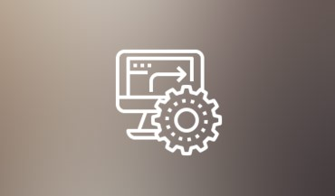

Podjetje s katerim polagamo temelje visoki civilizaciji, naslednja industrializacija,delavnica kjer se lahko z gorečnostjo in ponižnostjo žrtvujemo prihodnjim rodovom.
Naj bo to naš ideal, naj bo to načelo naše!
Nedavni Projekti
... kliknite na sliko za več informacij o uporabljenih tehnologijah, kompetencah in znanju.
ARION & Sapphire [1,5 let]
Razvoj "umetne inteligence" (General purpose Expert System).
Sapphire- sistem za avtomatski zajem in modeliranje znanja
(tako splošnega kot strokovnega) preko skeniranja knjig.
ARION- sistem ki omogoča industriji preko tega izboljšati
in avtomatizirati poslovne procese.

Project Gaudi [3 mesce]
Informacijski sistem za masovno pobiranje in obdelavo podatkov
s socialnih omrežij. Vsebuje upravljalno konzolo za lansiranje
in upravljanje pajkov (ang. crawler). Zgrajen za interno rabo.
Hiveguard [3 leta]
Razvoj strojne opreme za avtomatsko pobiranje podatkov v
čebeljih panjih in pri čebelarskih posegih. Zasnova
informacijskih sistemov ki preko teh podatkov avtomatizirajo
čebelarske procese. Zasnova 'sistemov za podporo odločanja'.
Android Native Projects [razno]
Razni projekti v okolju Android native.
Ostale Kompetence
Načrtovanje poslovnih procesov
Pisanje prodajnih skript, načrtovanje prodajnega procesa (B2C, B2B)
Tekoče angleško, brez "slovanskega naglasa"
Izobrazba
Gimnazija Celje-Center
Računalništvo in Informatika UNI, FRI, Univerza v Ljubljani (trenutno)
Nekaj naukov ki sem se jih naučil (scroll)
- Vsako minuto ponovi vprašanje- "Ali over-engineeram?"
- Dokumentacija, dokumentacija, dokumentacija!
- Unit testi povedo več kot besede (unit test kot dokumentacija)
- Software Engineer > Software Developer
- Delati brez načrtnega upravljanja časa pomeni iti v bitko brez orožja
- Tveganje je cena ki jo plačaš da smeš stopiti v akcijo
- Mož brez načel je mož brez oblike
- Radikalna odkritost pri prodaji je skrito zlato
- Esenca vodenja je pripeljati človeka čez njegovo limito in ga tam ustaliti
- Človeško delo je izvir vse vrednosti (pokaži moškemu da gradiš civilizacijo, in prestavljal bo gore)
- Z dobro izobrazbo narediš več in bolje v istem času
- Kdor je suženj svojim strastem je ostarelo dete, suženj povprečnosti
- Zvestoba je zmeraj poplačana
{kind=link}
{kind=link}
{kind=link}
{kind=link}